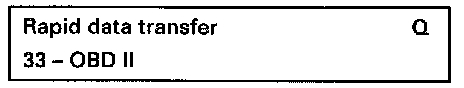

Connecting and Selecting "CARB/OBD II" address word 33
Special tools, testers and auxiliary items- VAG 1551/1552 scan tool with VAG 1551/3 adapter cable.
Test conditions:
- Fuses 15, 18 and 22 OK.
Work sequence:

- Open ashtray and remove, then slide cover for diagnostic connections to left (arrow).
- Connect VAG 1551/1552 scan tool with VAG 1551/3 adapter cable.
Depending on desired function:
- Switch ignition on, or start engine.
Operate VAG 1551/1552 scan tool taking into account the information on the display:
Selectable functions for address word "33 CARB/OBD II"
- Press -1- button to select "Rapid data transfer" operating mode 1.
- Press the -3- button twice to select "CARB/OBD II" address word 33.

Display will appear as shown
- Press Q button to confirm input.

Display will appear as shown
The following modes can be selected:
Mode 1 Current data Mode 1: Current Data
Mode 2 Freeze frame data Mode 2: Freeze Frame Data
Mode 3 DTC memory Mode 3: DTC Memory
Mode 4 Clear DTC memory Mode 4: Clear DTC Memory
Mode 5 Oxygen sensor signal (B1-S1) Mode 5: Oxygen Sensor Signal (B1-S1)
Mode 6 Transfer measured values. Measured values that are not being monitoring will be output.
Mode 7 Interrogate DTC memory. Malfunctions which have not switched ON the MIL can be interrogated.
NOTE:
When a mode is selected, the control module replies with a 4 on the display in front of the mode selected. Example: mode 2 will be indicated in the display with mode 42.